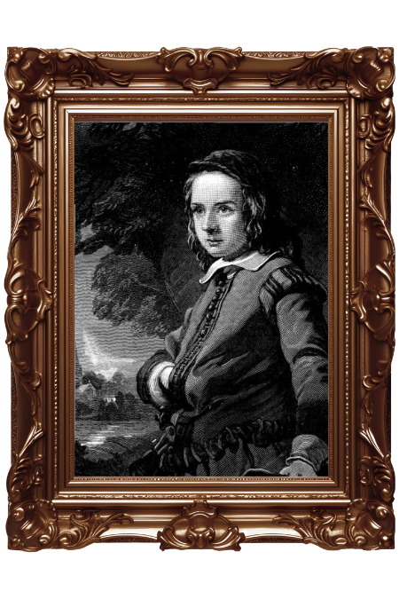
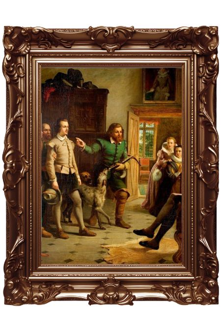

"All the world’s a stage…" – 1599

Born in Stratford-upon-Avon, William received a classical education that would define his future. His father was a glove-maker, and his mother came from a prosperous family. At 18, he married Anne Hathaway, starting a family before his legendary move to London.

Shakespeare became a vital member of the Lord Chamberlain’s Men. He wasn't just a writer; he was a shareholder in the Globe Theatre. His works from this era transformed English drama from simple plays into complex explorations of the human soul.